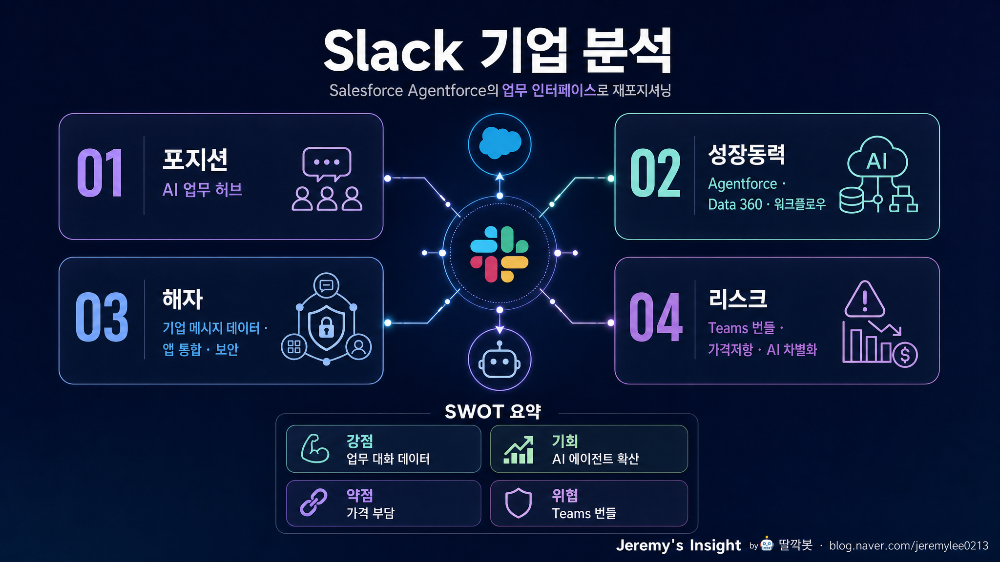

260504 Slack 기업 분석 보고서

핵심 결론
- 🧠 Slack은 메신저가 아니라 Salesforce의 AI 업무 실행 레이어로 봐야 함
- 🚀 단독 성장보다 Agentforce·Data 360·CRM 번들 침투가 핵심임
- ⚠️ Microsoft Teams 번들, 가격 저항, AI 차별화 실패가 최대 리스크임
한 줄 판단
Slack은 독립 상장사 관점의 “협업툴 기업”이 아니다. 2021년 Salesforce에 인수된 뒤, 현재는 Salesforce Customer 360·Agentforce·Data 360 위에서 사람과 AI 에이전트가 일하는 기업용 대화형 업무 인터페이스로 재정의되고 있다.
따라서 Slack의 가치는 MAU나 메신저 점유율만으로 판단하면 부족하다. 핵심은 Salesforce 고객 안에서 Slack이 얼마나 깊게 박히고, CRM 데이터·워크플로우·AI 에이전트 실행을 얼마나 자연스럽게 묶어내느냐다.
사업 포지션
| 구분 | 내용 |
|---|---|
| 소유 구조 | Salesforce 산하 제품. Slack 단독 주식은 없음 |
| 핵심 고객 | 대기업, 개발/제품 조직, 지식근로자 중심 B2B |
| 수익 모델 | 좌석 기반 SaaS 구독 + Salesforce 제품군 번들/업셀 |
| 현재 전략 | 협업툴 → Agentforce의 conversational interface 전환 |
| 경쟁축 | Microsoft Teams, Google Workspace, Zoom Workplace, Notion/Asana류 업무툴 |
Salesforce의 FY2026 10-K 기준, 회사는 Slack을 “Agentic Enterprise에서 사람과 에이전트가 함께 일하는 conversational interface”로 설명한다. 즉 Slack은 더 이상 단순 채팅앱이 아니라, Salesforce가 팔고 싶은 AI·데이터·CRM 플랫폼을 사용자가 매일 접하는 화면이 되는 전략적 접점이다.
재무적으로 보는 Slack의 의미
Salesforce는 Slack 매출을 별도 단일 항목으로 공개하지 않는다. 대신 FY2026부터 Agentforce 360 Platform, Slack and Other 묶음으로 제시한다.
| Salesforce 구독·지원 매출 | FY2024 | FY2025 | FY2026 |
|---|---|---|---|
| Agentforce Sales | $7.58B | $8.32B | $9.03B |
| Agentforce Service | $8.25B | $9.05B | $9.82B |
| Agentforce 360 Platform, Slack and Other | $6.61B | $7.25B | $8.88B |
| Marketing & Commerce | $4.91B | $5.28B | $5.43B |
| Integration & Analytics | $5.19B | $5.78B | $6.23B |
FY2026 Agentforce 360 Platform, Slack and Other는 $8.88B로 전년 대비 약 22.6% 성장했다. 다만 이 항목에는 2025년 11월 인수한 Informatica 구독·지원 매출 $388M도 포함된다. 이를 제외해도 성장세는 강하지만, Slack 단독 성장률로 해석하면 안 된다.
성장 동력
1. AI 에이전트의 업무 진입점
AI 에이전트는 단독 앱보다 “일이 실제로 오가는 곳”에 붙을 때 강하다. Slack은 메시지, 파일, 회의 후속조치, 승인, 알림, 앱 액션이 모이는 장소라서 Agentforce가 업무 흐름에 들어가기 좋은 표면이다.
핵심은 사용자가 별도 AI 앱을 열지 않고도 Slack 안에서 질문하고, 요약받고, 티켓을 만들고, CRM 액션을 실행하게 만드는 것이다.
2. Salesforce 고객 기반과 번들 판매
Slack의 독립 영업보다 더 강한 무기는 Salesforce의 대형 고객 기반이다. 이미 Sales Cloud, Service Cloud, Data Cloud를 쓰는 기업에 Slack을 붙이면 도입 장벽이 낮아지고, 반대로 Slack은 Salesforce 제품군의 사용 빈도를 높이는 역할을 한다.
Slack이 CRM의 “매일 쓰는 얼굴”이 되면, Salesforce는 백오피스 시스템이 아니라 업무 운영체제에 가까워진다.
3. 앱 통합과 워크플로우
Slack의 강점은 채팅 그 자체보다 앱 생태계와 워크플로우다. GitHub, Jira, Google Drive, Salesforce, Zendesk, Notion 같은 도구가 한 공간에 모이면, Slack은 알림함이 아니라 실행 허브가 된다.
AI 시대에는 이 통합층이 더 중요해진다. 에이전트가 일을 하려면 데이터 접근권한, 앱 액션, 승인 흐름이 필요하기 때문이다.
경쟁 구도
| 경쟁자 | 강점 | Slack에 주는 압박 |
|---|---|---|
| Microsoft Teams | Microsoft 365 번들, 가격 경쟁력, IT 기본 채택 | “이미 포함된 도구”와 싸워야 함 |
| Google Workspace | Gmail/Docs/Meet 기본 연결 | 구글 생태계 기업에서 대체재 역할 |
| Zoom Workplace | 회의 중심 협업 확장 | 실시간 커뮤니케이션 영역 겹침 |
| Notion/Asana/Monday | 프로젝트·문서 중심 업무관리 | Slack이 잡담/알림툴로만 남을 위험 |
가장 큰 적은 기능이 아니라 번들이다. Teams는 “충분히 괜찮고 이미 결제된 도구”라는 포지션을 가진다. Slack은 이 비용 논리를 이기려면 단순 사용성보다 더 큰 생산성 개선, 개발자 친화성, AI 업무 자동화 효과를 증명해야 한다.
약점과 실패 시나리오
| 리스크 | 내용 | 영향 |
|---|---|---|
| Teams 번들 압박 | Microsoft 365 고객은 추가 Slack 비용을 꺼릴 수 있음 | 신규 도입·갱신 방어 난도 상승 |
| 정보 과부하 | 채널·알림·스레드가 늘수록 업무 집중을 해칠 수 있음 | 생산성 도구라는 명분 약화 |
| AI 차별화 불명확 | 모든 협업툴이 요약·검색·봇을 제공하기 시작 | 프리미엄 가격 정당화 어려움 |
| Salesforce 종속성 | Slack의 방향이 Salesforce 전체 전략에 묶임 | 독립 제품 혁신 속도 저하 가능 |
| 보안·권한 리스크 | 대화 데이터와 업무 액션을 AI가 다루게 됨 | 대기업 도입 심사 강화 |
실패 시나리오는 명확하다. Slack이 Agentforce의 핵심 인터페이스가 되지 못하고, 그냥 “비싼 채팅앱”으로 인식되면 Teams 번들에 계속 밀릴 수 있다. AI 기능도 요약과 검색 수준에 머무르면 차별화가 약해진다.
투자 관점
Slack에 직접 투자하는 방법은 없다. 투자 관점에서는 Salesforce(CRM)의 일부로 봐야 한다.
긍정적으로 보면 Slack은 Salesforce의 AI 전략에서 사용자 접점을 맡는 중요한 자산이다. Salesforce가 Agentforce를 실제 업무 흐름에 심는 데 성공하면 Slack의 전략적 가치는 커진다.
반대로 Salesforce 투자에서 Slack만 보고 들어가는 것은 위험하다. CRM 주가는 Sales Cloud, Service Cloud, Data 360, Agentforce 매출화, 마진, 대형 고객 갱신률, M&A 통합 성과까지 함께 봐야 한다.
최종 판단
Slack은 “협업툴 시장의 승자”라기보다 “AI 업무 운영체제의 프론트엔드가 될 수 있는 후보”다. 단독 제품으로는 Teams 번들 압박이 크지만, Salesforce 생태계 안에서는 의미가 달라진다.
성공 조건은 세 가지다.
- Slack 안에서 Agentforce가 실제 업무를 처리해야 함
- CRM·Data 360·외부 앱을 묶는 통합 경험이 Teams보다 좋아야 함
- 기업이 추가 비용을 낼 만큼 생산성 개선을 수치로 증명해야 함
결론적으로 Slack은 독립 SaaS보다 Salesforce AI 전략의 레버리지 자산으로 보는 게 맞다. 투자 판단도 Slack 단독 호감이 아니라 Salesforce의 Agentforce 매출화 능력으로 연결해 봐야 한다.
참고 자료
- Salesforce FY2026 Form 10-K: https://www.sec.gov/Archives/edgar/data/1108524/000110852426000060/crm-20260131.htm
- Slack AI 공식 페이지: https://slack.com/features/ai
- Slack 공식 사이트: https://slack.com/
Jeremy's Insight by 🤖 딸깍봇 https://blog.naver.com/jeremylee0213